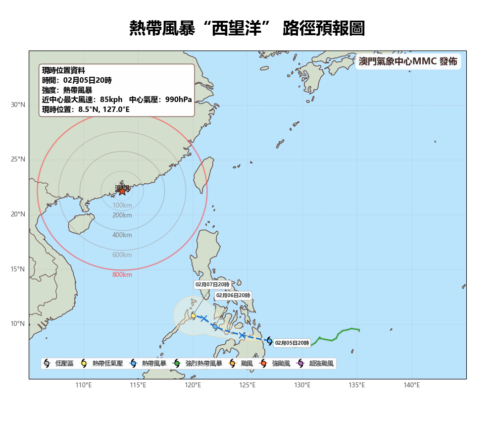
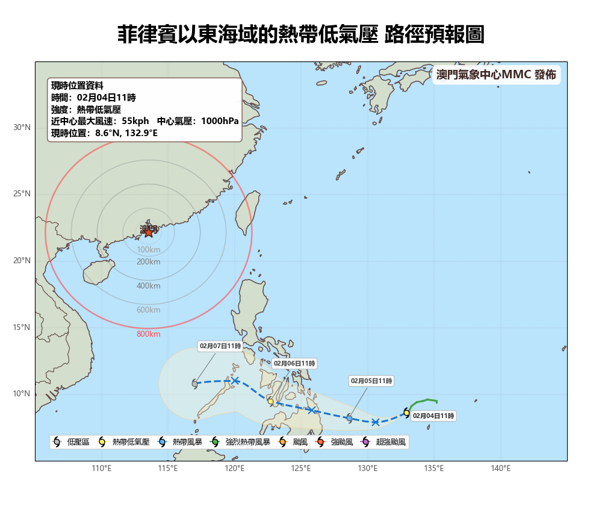
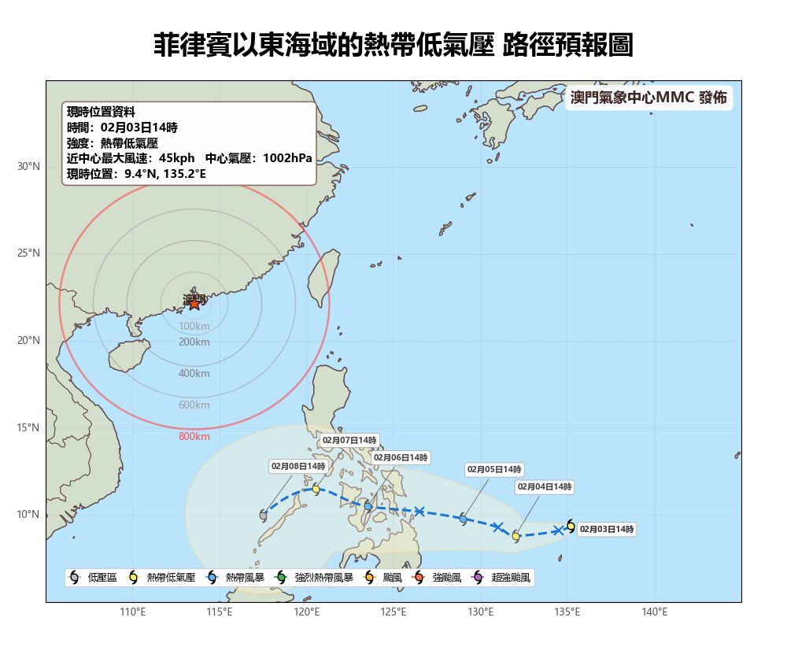

熱帶氣旋實時資訊
澳門氣象中心警報信號介紹
潛在熱帶氣旋的低壓區影響警報
預測該低壓區在未來24小時發展為熱帶氣旋的機會為高，預計可能受其影響。
颱風綠色警報
熱帶氣旋集結於澳門800公里範圍內，預計可能受熱帶氣旋影響。
颱風藍色警報
澳門受到熱帶氣旋的影響，持續風速現正或預測將達41公里/小時至62公里/小時，陣風約達至110公里/小時。
颱風黃色警報
澳門受到熱帶氣旋的影響，持續風速現正或預測將達63公里/小時至117公里/小時，陣風約達至180公里/小時。劃分為東北、東南、西南和西北，指示方位為未來數小時內的可能風向。
颱風橙色警報
熱帶氣旋中心正進一步接近當地或熱帶氣旋（強烈熱帶風暴級別）中心會在當地附近經過，持續風速已達63公里/小時至117公里/小時，且現正或預測將顯著加強。
颱風紅色警報
熱帶氣旋（颱風或以上級別）中心會在當地附近經過，持續風速現正或預測將達118公里/小時或以上，並伴有強烈陣風。
圖例說明
低壓區
熱帶低氣壓
熱帶風暴
強烈熱帶風暴
颱風
強颱風
超強颱風
過去路徑 (實線)
預報路徑 (虛線)
熱帶氣旋路徑預報圖
西望洋




預報時間列表
02月05日20時
02月04日23時
02月04日14時
02月04日11時
02月03日23時
02月03日14時
澳門氣象中心預報